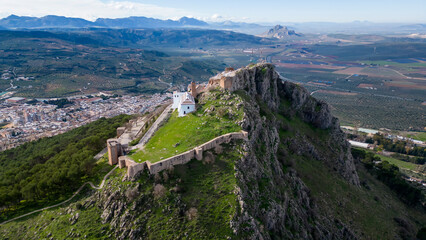

La Plaza Ochavada de Archidona es uno de los monumentos más emblemáticos de la localidad y un claro ejemplo de la arquitectura barroca andaluza del siglo XVIII. Construida en 1786, su nombre se debe a su particular forma octogonal, única en la región, que combina elementos de los estilos arquitectónicos barroco y neoclásico.

La Mezquita de Archidona es un destacado ejemplo del legado islámico en la región de Andalucía. Construida en el siglo IX, fue uno de los principales lugares de culto de la antigua medina de Archidona. De la estructura original se conserva el mihrab, orientado hacia La Meca, y algunos restos de arcos.

La Iglesia de la Victoria de Archidona es un importante monumento religioso que se remonta al siglo XVI. Originalmente formaba parte del convento de la Orden de los Mínimos, la iglesia se destaca por su fachada de estilo barroco y su singular torre campanario.